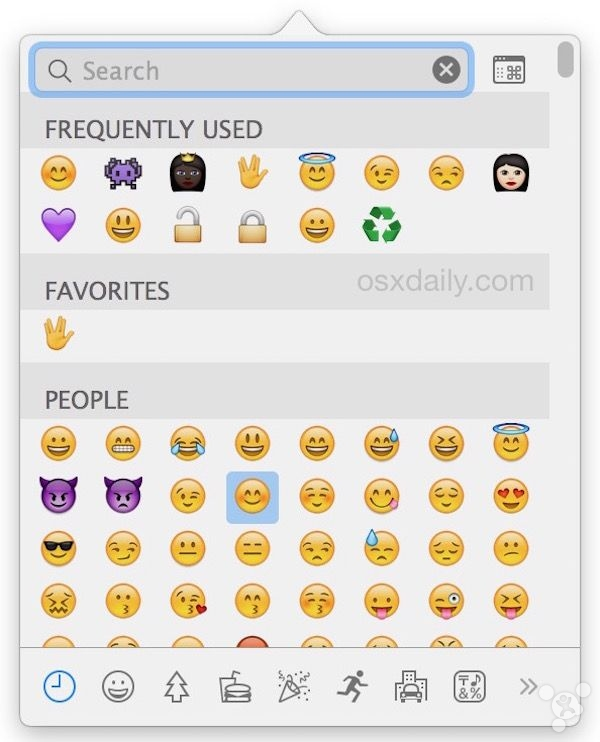

全局配置 .gitignore 之后，新建仓库，可以默认让 iOS 及 Android 项目生效：
1 | git config --global core.excludesfile=/Users/Alex/Documents/mywork/my_proj/iosproj/global_git_ignore/.gitignore |
另外，在 https://www.gitignore.io/ 可以配置其它 .gitignore 文件。
全局配置 .gitignore 之后，新建仓库，可以默认让 iOS 及 Android 项目生效：
1 | git config --global core.excludesfile=/Users/Alex/Documents/mywork/my_proj/iosproj/global_git_ignore/.gitignore |
另外，在 https://www.gitignore.io/ 可以配置其它 .gitignore 文件。
在 Terminal 中执行：
1 | defaults -currentHost write com.apple.ImageCapture disableHotPlug -bool true |
恢复最小化到 Dock 中的 App：
1.Command + Tab 切换至相应的程序；
2.放在 Tab（保持按着 Command）,再按 option键恢复最小化的窗口；
Emoji 键盘的呼出非常简单，只需记住这个快捷键组合即可：
Command + Control + Spacebar

使用 Mac OS X 进行开发，除了在 App Store 下载安装一些 .app 之后，不可避免地会使用一些命令行工具，例如 npm(Node.js),git(Git) 等，如果这些命令行工具也可以有一个统一的『官方』下载地址，并且可以方便地安装、升级、卸载就好了，今天介绍的这两个『命令行工具管理器』是目前比较流行的两个包管理器。
brew 是一个包管理器，常见的工具 git, node.js , gradle, carthage 等工具都可以在 brew 中进行安装和升级。
使用
1 | ruby -e "$(curl -fsSL https://raw.githubusercontent.com/Homebrew/install/master/install)" |
安装 brew;
brew 常见命令有以下：
1 | brew update #更新 brew install #安装 brew uninstall #卸载 brew search #查找 |
接下来介绍另一款包管理器：gem
gem 是另一个包管理器，通常用来管理 cocoapods, noman-cli 等 Mac 相关的命令行工具；通常系统自带有 gem 管理器，常见命令有以下：
1 | sudo gem update --system #更新自身 gem install #安装 gem search #查找 |
EOF.